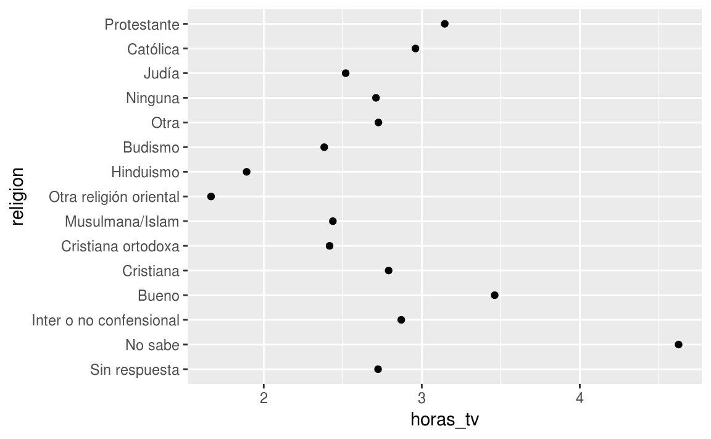
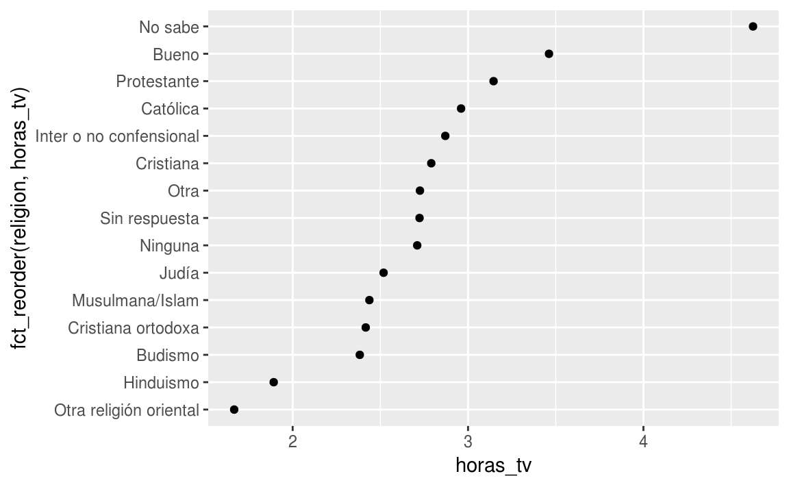
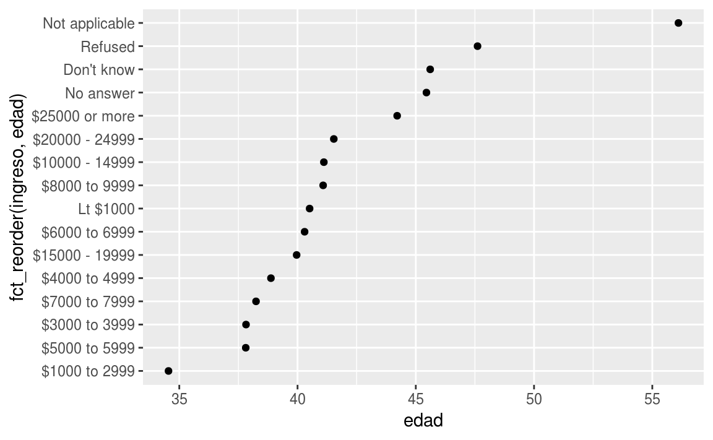
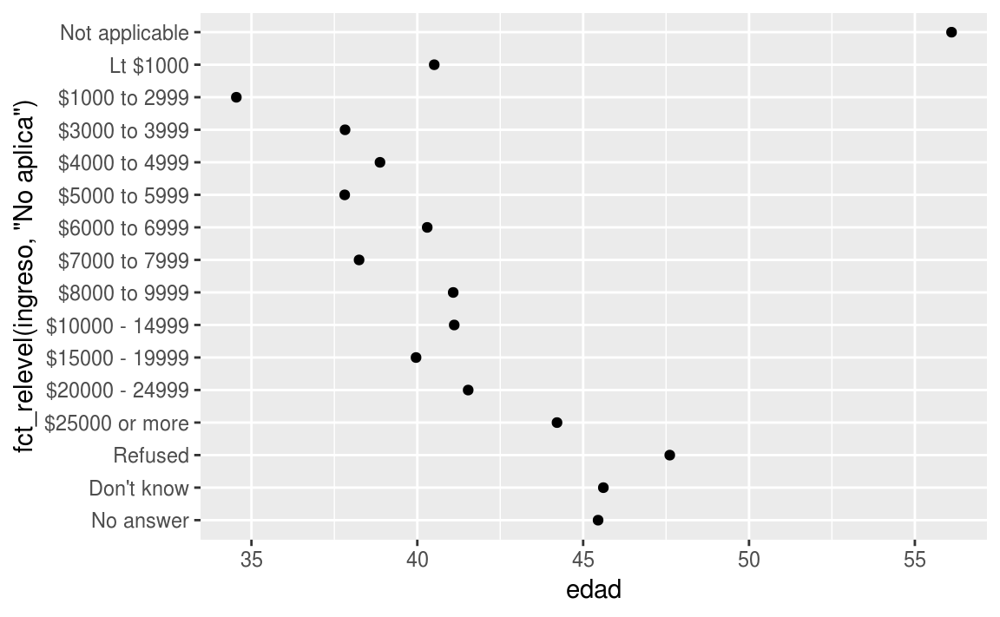
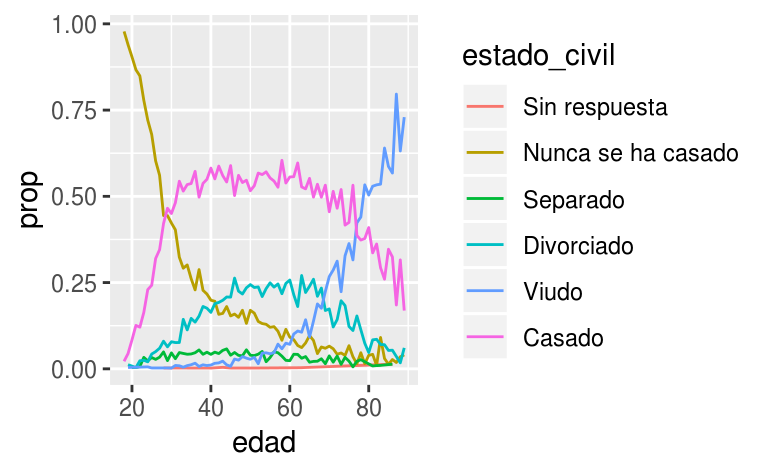
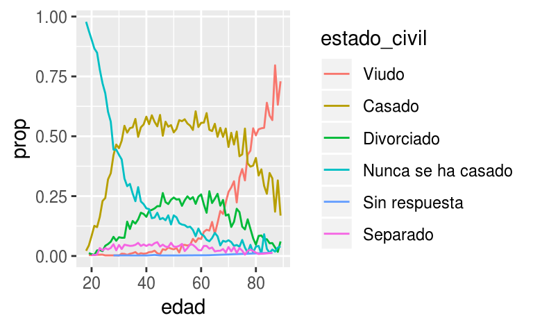
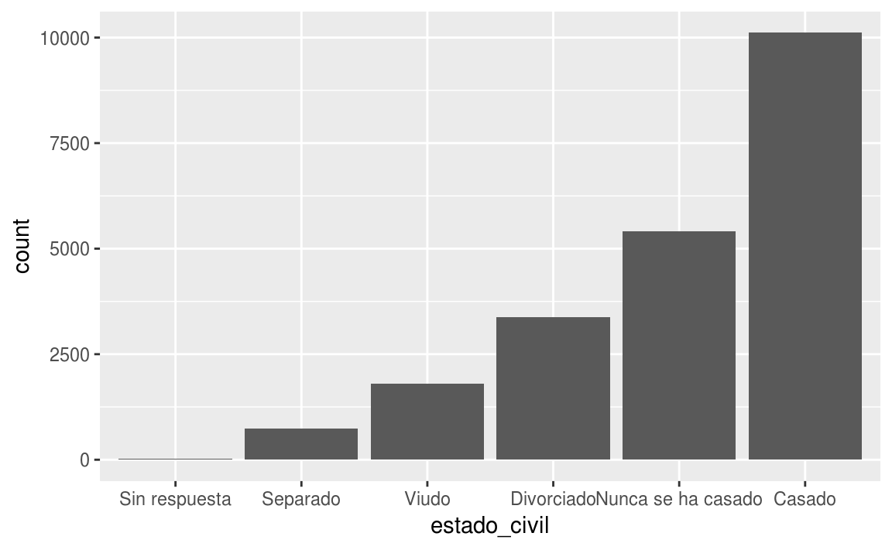

7 Factores
7.1 Introducción
En R, los factores se usan para trabajar con variables categóricas, es decir, variables que tienen un conjunto fijo y conocido de valores posibles. Además, son útiles cuando se quiere mostrar vectores de caracteres en un orden no alfabético.
Históricamente, los factores eran más sencillos de trabajar que los caracteres. Como resultado, muchas de las funciones de R base automáticamente convierten los caracteres a factores. Esto significa que, a menudo, los factores aparecen en lugares donde no son realmente útiles. Afortunadamente, no tienes que preocuparte de eso en el tidyverse, y puedes concentrarte en situaciones donde los factores son genuinamente útiles.
7.1.1 Requisitos previos
Para trabajar con factores, vamos a usar el paquete forcats (del inglés para cadenas), que provee herramientas para lidear con variables categóricas (¡y es un anagrama de factores!). Este paquete provee un amplio rango de ayudantes para trabajar con factores. forcats no es parte de los paquetes centrales de tidyverse, así que necesitamos cargarlo de forma explícita.
library(tidyverse)
library(forcats)
library(datos)7.1.2 Aprendiendo más
Si quieres aprender más sobre los factores, recomiendo leer el artículo de Amelia McNamara y Nicholas Horton, Wrangling categorical data in R (el nombre significa Luchando con Datos Categóricos en R). Este artículo cuenta parte de la historia discutida en stringsAsFactors: An unauthorized biography (del inglés cadenasComoFactores: Una Biografía No Autorizada) y stringsAsFactors = <sigh> (del inglés cadenasComoFactores = <suspiro>), y compara las propuestas tidy para los datos categóricos demostrados en este libro, contra los métodos base de R. Una versión temprana de este artículo ayudó a motivar y limitar el paquete forcats; ¡Gracias Amelia y Nick!
7.2 Creando factores
Imagina que tienes una variable que guarda los meses:
x1 <- c("Dic", "Abr", "Ene", "Mar")Usar una cadena de caracteres (o string, en inglés) para guardar esta variable tiene dos problemas:
- Sólo hay doce meses posibles, y no hay nada que te resguarde de errores de tipeo:
x2 <- c("Dic", "Abr", "Eme", "Mar")- No ordena de una forma útil:
sort(x1)
#> [1] "Abr" "Dic" "Ene" "Mar"Puedes solucionar ambos problemas con un factor. Para crearlo debes empezar armando una lista de los niveles válidos:
niveles_meses <- c(
"Ene", "Feb", "Mar", "Abr", "May", "Jun",
"Jul", "Ago", "Sep", "Oct", "Nov", "Dic"
)Ahora puedes crear un factor:
y1 <- factor(x1, levels = niveles_meses)
y1
#> [1] Dic Abr Ene Mar
#> Levels: Ene Feb Mar Abr May Jun Jul Ago Sep Oct Nov Dic
sort(y1)
#> [1] Ene Mar Abr Dic
#> Levels: Ene Feb Mar Abr May Jun Jul Ago Sep Oct Nov DicY cualquier valor no fijado en el conjunto, será convertido a NA de forma silenciosa:
y2 <- factor(x2, levels = niveles_meses)
y2
#> [1] Dic Abr <NA> Mar
#> Levels: Ene Feb Mar Abr May Jun Jul Ago Sep Oct Nov DicSi quieres una advertencia, puedes usar readr::parse_factor() (del inglés analizar gramaticalmente un factor):
y2 <- parse_factor(x2, levels = niveles_meses)
#> Warning: 1 parsing failure.
#> row col expected actual
#> 3 -- value in level set EmeSi omites los niveles, se van a tomar desde los datos en orden alfabético:
factor(x1)
#> [1] Dic Abr Ene Mar
#> Levels: Abr Dic Ene MarEn algunos momentos, es preferible que el orden de los niveles se corresponda con su primera aparición en los datos. Puedes hacer esto cuando creas el factor, al marcar los niveles con unique(x) (del inglés único), o después del hecho, con fct_inorder() (del inglés factores en orden):
f1 <- factor(x1, levels = unique(x1))
f1
#> [1] Dic Abr Ene Mar
#> Levels: Dic Abr Ene Mar
f2 <- x1 %>% factor() %>% fct_inorder()
f2
#> [1] Dic Abr Ene Mar
#> Levels: Dic Abr Ene MarSi alguna vez necesitas acceso directo al conjunto de niveles válidos, puedes hacerlo con levels() (del inglés niveles):
levels(f2)
#> [1] "Dic" "Abr" "Ene" "Mar"7.4 Modificar el orden de los factores
A menudo resulta útil cambiar el orden de los niveles de factores en una visualización. Por ejemplo, imagina que quieres explorar el número promedio de horas consumidas mirando televisión por día, para cada religión:
resumen_religion <- encuesta %>%
group_by(religion) %>%
summarise(
edad = mean(edad, na.rm = TRUE),
horas_tv = mean(horas_tv, na.rm = TRUE),
n = n()
)
ggplot(resumen_religion, aes(horas_tv, religion)) + geom_point()
Este gráfico resulta dificil de interpretar porque no hay un patrón general. Podemos mejorarlo al ordenar los niveles de religion usando fct_reorder() (del inglés, reordenar factores). fct_reorder() requiere tres argumentos:
f, el factor cuyos niveles quieres modificar.x, un vector numérico que quieres usar para reordenar los niveles.- Opcionalmente,
fun, una función que se usa si hay múltiples valores dexpara cada valor def. El valor por defecto es unmedian(del inglés, mediana).
ggplot(resumen_religion, aes(horas_tv, fct_reorder(religion, horas_tv))) +
geom_point()
Reordenar la columna religión (religion) hace que sea más sencillo ver que las personas en la categoría “No same” ven más televisión, mientras que “Hinduismo” ven mucho menos.
Cuando haces transformaciones más complicadas, yo recomiendo que las remuevas de aes() (del inglés, abreviatura de estética) hacia un paso de mutación separado, con mutate() (del inglés, mutar). Por ejemplo, puedes reescribir ese gráfico de la siguiente forma:
resumen_religion %>%
mutate(religion = fct_reorder(religion, horas_tv)) %>%
ggplot(aes(horas_tv, religion)) +
geom_point()¿Qué sucede si creamos un gráfico para observar cómo varía la edad promedio para cada ingreso reportado?
resumen_ingreso <- encuesta %>%
group_by(ingreso) %>%
summarise(
edad = mean(edad, na.rm = TRUE),
horas_tv = mean(horas_tv, na.rm = TRUE),
n = n()
)
ggplot(resumen_ingreso, aes(edad, fct_reorder(ingreso, edad))) + geom_point()
¡Aquí, reordenar los niveles arbitrariamente no es una buena idea! Eso es porque ingreso ya tiene un orden basado en un principio determinado, con el cual no deberíamos meternos. Reserva fct_reorder() para factores cuyos niveles están ordenados arbitrariamente.
Sin embargo, sí tiene sentido mover “No Aplica” al frente, junto a los otros niveles especiales. Puedes usar fct_relevel() (del inglés cambiar niveles). Ésta función recibe como argumento un factor, f, y luego cualquier número de niveles que quieres mover al principio de la línea.
ggplot(resumen_ingreso, aes(edad, fct_relevel(ingreso, "No aplica"))) +
geom_point()
#> Warning: Unknown levels in `f`: No aplica
#> Warning: Unknown levels in `f`: No aplica
¿Por qué crees que la edad promedio para “No aplica” es tan alta?
Otro tipo de reordenamiento es útil cuando estás coloreando las líneas de un gráfico. fct_reorder2() (del inglés, reorganizar niveles número dos) reordena el factor mediante los valores y, asociados con los valores x más grandes. Esto hace que el gráfico sea más sencillo de leer, porque los colores de líneas se ajustan con la leyenda.
por_edad <- encuesta %>%
filter(!is.na(edad)) %>%
count(edad, estado_civil) %>%
group_by(edad) %>%
mutate(prop = n / sum(n))
ggplot(por_edad, aes(edad, prop, colour = estado_civil)) +
geom_line(na.rm = TRUE)
ggplot(por_edad, aes(edad, prop, colour = fct_reorder2(estado_civil, edad, prop))) +
geom_line() +
labs(colour = "estado_civil")
Finalmente, para los gráficos de barra, puedes usar fct_infreq() (del inglés, frecuencia incremental de factores) para ordenar los niveles incrementalmente según su frecuencia: este es el ordenamiento más sencillo porque no requiere de variables adicionales. Puedes querer combinarlo con fct_rev() (del inglés, revisar factores).
encuesta %>%
mutate(estado_civil = estado_civil %>% fct_infreq() %>% fct_rev()) %>%
ggplot(aes(estado_civil)) +
geom_bar()
7.4.1 Ejercicios
Hay algunos números sospechosamente grandes en
horas_tv. ¿Es la media un buen resumen?Identifica, para cada factor en
encuesta, si el orden de los niveles es arbitrario o responde a algún principio.¿Por qué mover “No aplica” al inicio de los niveles lo llevó al final del gráfico?
7.5 Modificar los niveles de los factores
Más poderoso que cambiar el orden de los niveles es cambiar sus valores. Esto te permite clarificar etiquetas para publicación, y colapsar niveles para visualizaciones de alto nivel. La herramienta más general y más poderosa es fct_recode() (del inglés, recodificar factores). Ésta función te permite recodificar, o cambiar, el valor de cada nivel. Por ejemplo, toma la columna encuesta$partido:
encuesta %>% count(partido)
#> # A tibble: 10 x 2
#> partido n
#> <fct> <int>
#> 1 Sin respuesta 154
#> 2 No sabe 1
#> 3 Otro partido 393
#> 4 Republicano duro 2314
#> 5 Republicano moderano 3032
#> 6 Independiente pro republicano 1791
#> # … with 4 more rowsLos niveles son tersos e inconsistentes. Hay que correjirlos un poco para que sean más largos, y poder usar una construcción paralela.
encuesta %>%
mutate(partido = fct_recode(partido,
"Republicano duro" = "Republicano Acérrimo",
"Republicano moderado" = "Republicado No Acérrimo",
"Independiente pro republicano" = "Independiente, pro-Rep",
"Independiente pro demócrata" = "Independiente, pro-Dem",
"Demócrata moderado" = "Demócrata No Acérrimo",
"Demócrata duro" = "Demócrata Acérrimo"
)) %>%
count(partido)
#> Warning: Unknown levels in `f`: Republicano Acérrimo, Republicado No
#> Acérrimo, Independiente, pro-Rep, Independiente, pro-Dem, Demócrata No
#> Acérrimo, Demócrata Acérrimo
#> # A tibble: 10 x 2
#> partido n
#> <fct> <int>
#> 1 Sin respuesta 154
#> 2 No sabe 1
#> 3 Otro partido 393
#> 4 Republicano duro 2314
#> 5 Republicano moderano 3032
#> 6 Independiente pro republicano 1791
#> # … with 4 more rowsfct_recode() no modificará los niveles que no han sido mencionados explícitamente, y te advertirá si accidentalmente te refieres a un nivel que no existe.
Para combinar grupos, puedes asignar múltiples niveles viejos, al mismo nivel nuevo:
encuesta %>%
mutate(partido = fct_recode(partido,
"Republicano duro" = "Republicano Acérrimo",
"Republicano moderado" = "Republicado No Acérrimo",
"Independiente pro republicano" = "Independiente, pro-Rep",
"Independiente pro demócrata" = "Independiente, pro-Dem",
"Demócrata moderado" = "Demócrata No Acérrimo",
"Demócrata duro" = "Demócrata Acérrimo",
"Otro" = "Sin respuesta",
"Otro" = "No sabe",
"Otro" = "Otro partido"
)) %>%
count(partido)
#> Warning: Unknown levels in `f`: Republicano Acérrimo, Republicado No
#> Acérrimo, Independiente, pro-Rep, Independiente, pro-Dem, Demócrata No
#> Acérrimo, Demócrata Acérrimo
#> # A tibble: 8 x 2
#> partido n
#> <fct> <int>
#> 1 Otro 548
#> 2 Republicano duro 2314
#> 3 Republicano moderano 3032
#> 4 Independiente pro republicano 1791
#> 5 Independiente 4119
#> 6 Independiente pro democrata 2499
#> # … with 2 more rowsDebes usar esta técnica con cuidado: si agrupas categorías que son realmente diferentes, obtendrás resultados confusos y/o engañosos.
Si quieres colapsar muchos niveles, fct_collapse() (del inglés, colapsar factores) es una variante muy útil de fct_recode(). Para cada nueva variable, puedes proveer un vector de niveles viejos:
encuesta %>%
mutate(partido = fct_collapse(partido,
otro = c("Sin respuesta", "No sabe", "Otro partido"),
republicano = c("Republicano Acérrimo", "Republicado No Acérrimo"),
independiente = c("Independiente, pro-Rep", "Independiente", "Independiente, pro-Dem"),
democrata = c("Demócrata No Acérrimo", "Demócrata Acérrimo")
)) %>%
count(partido)
#> Warning: Unknown levels in `f`: Republicano Acérrimo, Republicado No
#> Acérrimo, Independiente, pro-Rep, Independiente, pro-Dem, Demócrata No
#> Acérrimo, Demócrata Acérrimo
#> # A tibble: 8 x 2
#> partido n
#> <fct> <int>
#> 1 otro 548
#> 2 Republicano duro 2314
#> 3 Republicano moderano 3032
#> 4 Independiente pro republicano 1791
#> 5 independiente 4119
#> 6 Independiente pro democrata 2499
#> # … with 2 more rowsA veces, simplemente quieres agrupar todos los grupos pequeños para simplificar un gráfico o tabla. Ese es un trabajo para fct_lump() (del inglés, agrupar factores):
encuesta %>%
mutate(religion = fct_lump(religion)) %>%
count(religion)
#> # A tibble: 2 x 2
#> religion n
#> <fct> <int>
#> 1 Protestante 10846
#> 2 Other 10637El comportamiento por defecto es agrupar los grupos pequeños de forma progresiva, asegurando que la agregación continúa siendo el grupo más pequeño. En este caso, esto no resulta demasiado útil: es cierto que la mayoría de Americanos en esta encuesta son Protestantes, pero probablemente hemos colapsado en exceso.
En cambio, podemos usar el parámetro n para especificar cuántos grupos (excluyendo otros) queremos colapsar:
encuesta %>%
mutate(religion = fct_lump(religion, n = 10)) %>%
count(religion, sort = TRUE) %>%
print(n = Inf)
#> # A tibble: 11 x 2
#> religion n
#> <fct> <int>
#> 1 Protestante 10846
#> 2 Católica 5124
#> 3 Ninguna 3523
#> 4 Cristiana 689
#> 5 Judía 388
#> 6 Other 234
#> 7 Otra 224
#> 8 Budismo 147
#> 9 Inter o no confensional 109
#> 10 Musulmana/Islam 104
#> 11 Cristiana ortodoxa 957.5.1 Ejercicios
¿Cómo han cambiado en el tiempo las proporciones de personas que se identifican como Demócratas, Republicanas e Independientes?
¿Cómo podrías colapsar
ingresoen un grupo más pequeño de categorías?